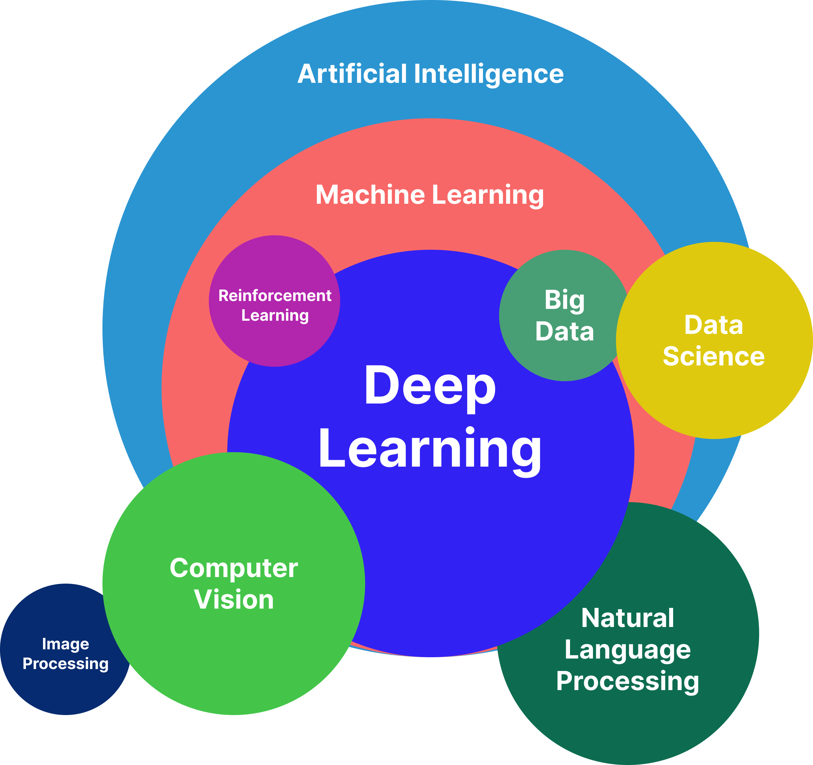
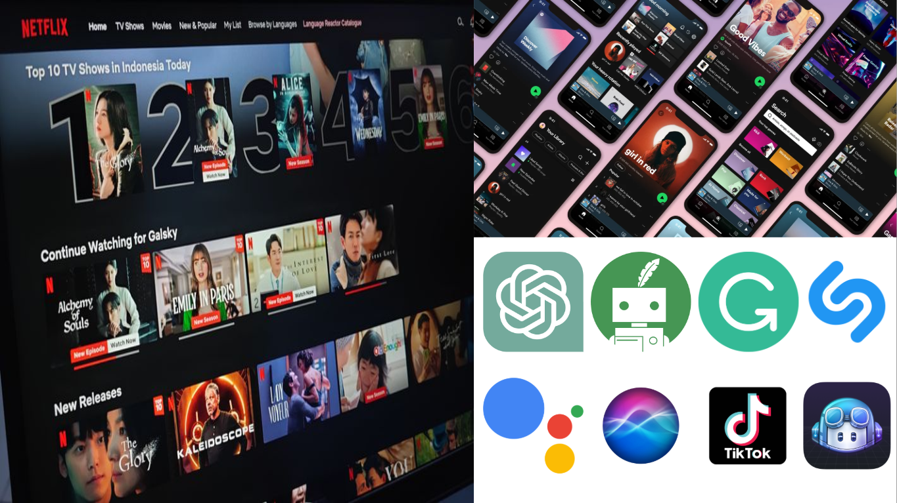
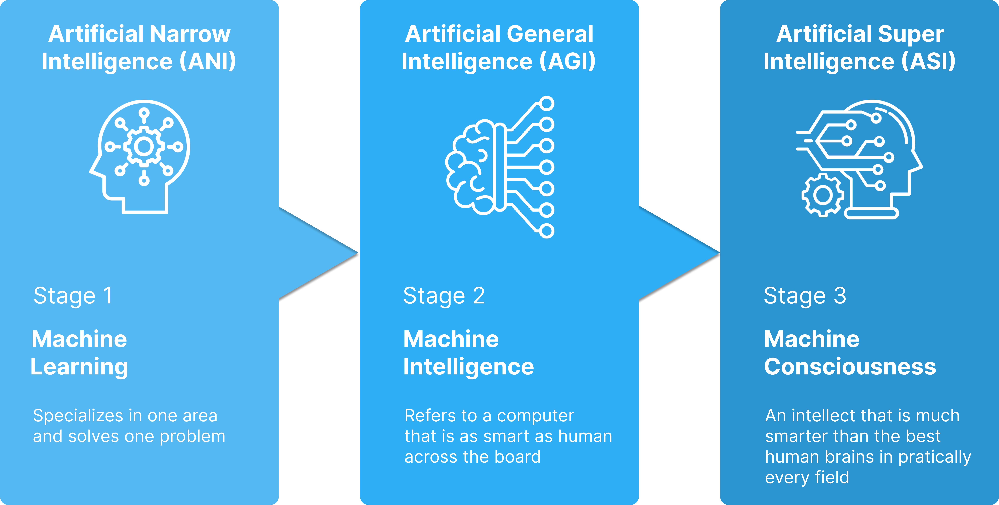

flowchart TD
S[Sensor / Kamera / Radar] --> D[Data]
D --> M[Model AI]
M --> A[Keputusan]
A -->|umpan balik| S
style S fill:#e1f5fe
style M fill:#fff3e0
style A fill:#c8e6c9
Exploring the Potential of Intelligent Technologies
IGNITE — Innovation Growth in Engineering
Eric Julianto
Braincore × IGNITE Batavia Team × Universitas Negeri Jakarta
About Me

x.com/algonacci
github.com/algonacci
linkedin.com/eric-julianto
instagram.com/eric.juliantooo
Work Experience
Research Analyst at Braincore (Dec 21 - Now)
Machine Learning Mentor at Bangkit Academy (Feb 23 - Jan 24)
SEO Intern at Dibilabs by Dibimbing.id (Mar 23 - Jun 23)
AI Developer Intern at ZettaByte (May 22 - Aug 22)
Education
- Hospitality & Tourism at Universitas Bunda Mulia
- Computer Science at Universitas Esa Unggul
Sesi Hari Ini
Sesi 1 — Teori
- Pengenalan AI
- Tantangan & Peluang AI
- Jenis-jenis AI
- AI di Kendaraan Hemat Energi
Sesi 2 — Praktik
- Bikin AI yang mengenali objek di jalan
- Langsung dari Google Colab
- Uji di gambar & video
Hari ini
Teori dulu untuk paham kenapa, lalu praktik untuk merasakan bagaimana.
Pengenalan AI
Apa sebenarnya kecerdasan buatan itu?
Definisi AI
Definisi
“Kecerdasan buatan adalah teknologi komputer yang memungkinkan mesin melakukan tugas yang biasanya membutuhkan kecerdasan manusia.”
Contoh tugas “cerdas”:
- Mengenali wajah, suara, atau objek
- Memahami bahasa manusia
- Mengambil keputusan dari data

Tapi, Apa Itu Kecerdasan?
“Kemampuan untuk melakukan atau mengerjakan sesuatu.”
Intinya
Kalau mesin bisa mengerjakan sesuatu yang tadinya butuh manusia — di situlah AI bekerja.

Peran AI
- Peningkatan efisiensi
- Analisis data
- Personalisasi
- Otomatisasi
- Pengambilan keputusan
- Peningkatan kualitas hidup
- Mendukung kreativitas
- dan lain-lain
Untuk mobil hemat energi
AI bisa memantau lingkungan, mendeteksi objek, dan membantu keputusan berkendara yang lebih aman & efisien.
AI sebagai Alat Bantu
AI tidak menggantikan manusia — AI memperkuat kemampuan kita.
Untuk Kreativitas
- Menulis & meringkas
- Membuat ide konten
- Menerjemahkan & parafrase
- Membantu memperbaiki kode
Untuk Rekayasa
- Membaca data sensor
- Mengenali objek di jalan
- Mengoptimasi performa kendaraan
- Mendukung keputusan keselamatan
Tema kita
AI sebagai alat bantu untuk meningkatkan kemampuan manusia.
Tantangan & Peluang
Dua sisi dari pengembangan AI
Tantangan
| Tantangan | Penjelasan |
|---|---|
| Etika & keamanan | Privasi data, keamanan siber, penyalahgunaan AI |
| Keterbatasan data | Butuh data cukup & berkualitas untuk dilatih |
| Kurang transparan | Sebagian model sulit dipahami manusia |
| Ketergantungan | Risiko terlalu bergantung pada teknologi |
Peluang
- Multimodal AI — satu AI menangani banyak domain (teks, gambar, suara)
- Quantum Machine Learning — melatih model dengan komputer kuantum
- Artificial General Intelligence — AI yang menyelesaikan banyak tugas umum
- Kolaborasi teknologi — AI + IoT, Software Engineering, Blockchain, dll
Kunci
AI bukan teknologi yang berdiri sendiri — kekuatannya muncul saat dikolaborasikan.
Jenis-jenis AI
Istilah yang sering kita dengar
Istilah yang Sering Tertukar
| Istilah | Arti Singkat |
|---|---|
| Artificial Intelligence | Payung besar — kecerdasan buatan |
| Machine Learning | Mesin belajar dari contoh/data |
| Deep Learning | ML dengan neural network yang lebih mendalam |
| Big Data | Pengolahan data dalam jumlah sangat besar |
| Data Science | Ilmu mengolah & memaknai data |
| Reinforcement Learning | AI belajar dari coba-coba & reward |
| Computer Vision | AI yang mengolah data gambar |
| Natural Language Processing | AI yang memahami bahasa manusia |
3 Fase Artificial Intelligence
| Fase | Kemampuan | Contoh |
|---|---|---|
| ANI | Ahli pada satu tugas | Deteksi objek, rekomendasi, chatbot |
| AGI | Setara manusia di banyak tugas | Masih riset |
| ASI | Melampaui kecerdasan manusia | Masih hipotesis |
Catatan
Semua AI yang ada sekarang — termasuk yang kita pakai nanti — masih ANI.

Tools untuk Membangun AI
Bahasa & Library
- Python — bahasa utama AI
- TensorFlow / PyTorch
- scikit-learn
- OpenCV, Ultralytics (YOLO)
Platform & Alat Bantu
- Google Colab — GPU gratis
- Hugging Face — model siap pakai
- ChatGPT — asisten coding
Sesi praktik
Kita pakai Python + Ultralytics di Google Colab.
AI di Kendaraan Hemat Energi
Dari konsep AI ke mobil Batavia Team
Bagaimana Mobil Bisa “Cerdas”?
Kendaraan modern membaca lingkungannya lewat:
- 📷 Kamera — gambar jalan
- 📡 Radar / Sensor — jarak & kondisi
- ⚡ Sensor internal — arus, tegangan, suhu
Alurnya
Data → Model AI → Keputusan: penghindaran tabrakan, pengenalan rambu, pemantauan lingkungan.
Computer Vision: AI yang “Melihat”
| Tugas | Pertanyaan | Hasil |
|---|---|---|
| Klasifikasi | “Ada apa di gambar?” | Satu label: “mobil” |
| Deteksi Objek | “Apa dan di mana?” | Kotak + label + keyakinan |
| Segmentasi | “Piksel ini milik apa?” | Area per piksel |
Paling berguna
Untuk kendaraan, Deteksi Objek — tahu apa dan di mana objeknya.
Bocoran Sesi Praktik
Dua project: Tabular & Vision
Dua Project Praktik
1. Tabular ML 📊
Prediksi SoC Baterai
Sensor (arus, tegangan, suhu) → sisa daya baterai (%)
2. Computer Vision 🖼️
Deteksi Objek di Jalan
Gambar/video → kendaraan & orang
Satu prinsip ML, dua jenis data
Angka dalam tabel vs piksel dalam gambar.
Project 1: Prediksi SoC Baterai
Bisakah kendaraan menebak sisa daya baterai (State of Charge) hanya dari data sensor?
flowchart LR
S[Sensor Baterai] --> M[Model ML] --> G[Estimasi SoC]
style S fill:#fff3e0
style M fill:#e1f5fe
style G fill:#c8e6c9
Kenapa penting
SoC = “indikator bensin” mobil listrik. Salah estimasi → salah keputusan energi.
Data Sensor Baterai
| Kolom | Satuan | Arti |
|---|---|---|
| Current | A | Arus (charge + / discharge −) |
| Voltage | V | Tegangan sel |
| Temperature | °C | Suhu sel |
| SoC (target) | % | Sisa daya yang diprediksi |
Data latih vs uji
Fresh cell (358 ribu baris) → latih. Aged cell (307 ribu baris) → uji generalisasi.
Alur Praktik SoC
flowchart LR
D[Baca Data Sensor] --> C[Hitung SoC - Coulomb Counting]
C --> T[Latih Random Forest]
T --> P[Prediksi dan Evaluasi]
style D fill:#e1f5fe
style C fill:#fff3e0
style P fill:#c8e6c9
Tabular = ML klasik
Belajar dari kolom angka — fondasi sebelum masuk ke gambar.
Project 2: Deteksi Objek di Jalan
Sebuah AI yang melihat foto/video jalan dan menandai:
- 🚗 Mobil (car)
- 🚚 Truk (truck)
- 🚌 Bus (bus)
- 🚲 Sepeda (bike)
- 🏍️ Motor (motor)
- 🧍 Pengendara (rider)
- 🚶 Orang (person)
Kenapa penting
Inilah dasar fitur seperti penghindaran tabrakan pada kendaraan cerdas.
Alur Praktik Deteksi Objek
flowchart LR
D[Siapkan Dataset] --> T[Latih Model di Colab]
T --> I[Uji di Gambar]
I --> V[Uji di Video]
style D fill:#e1f5fe
style T fill:#fff3e0
style V fill:#c8e6c9
Tenang
Detailnya kita kerjakan langsung dari Colab di sesi praktik — tinggal jalankan sel per sel.
Dari Deteksi ke Keputusan
Hasil Deteksi
🚶 orang × 3 (0.90)
🚗 mobil × 2 (0.85)
🏍️ motor × 1 (0.78)→
Kemungkinan Keputusan
- 🛑 Ada orang → kurangi kecepatan
- 🚗 Mobil dekat → jaga jarak
- 🏍️ Motor menyalip → waspada
Ingat
AI memberi persepsi (apa & di mana). Keputusan berkendara diambil sistem terpisah.
Penutup
Tiga Pertanyaan Kunci
1. Data apa yang bisa saya kumpulkan?
2. Apa yang ingin diprediksi model?
3. Keputusan apa yang akan memakainya?
flowchart TD
Q1[Data apa?] --> Q2[Prediksi apa?]
Q2 --> Q3[Keputusan apa?]
Q3 --> S[Sistem yang berguna]
style Q1 fill:#e1f5fe
style Q2 fill:#fff3e0
style Q3 fill:#c8e6c9
style S fill:#ede7f6
Takeaway
Project AI yang baik dimulai dari keputusan nyata, bukan dari nama model.
Q&A
Terima kasih! Lanjut ke sesi praktik 🚀